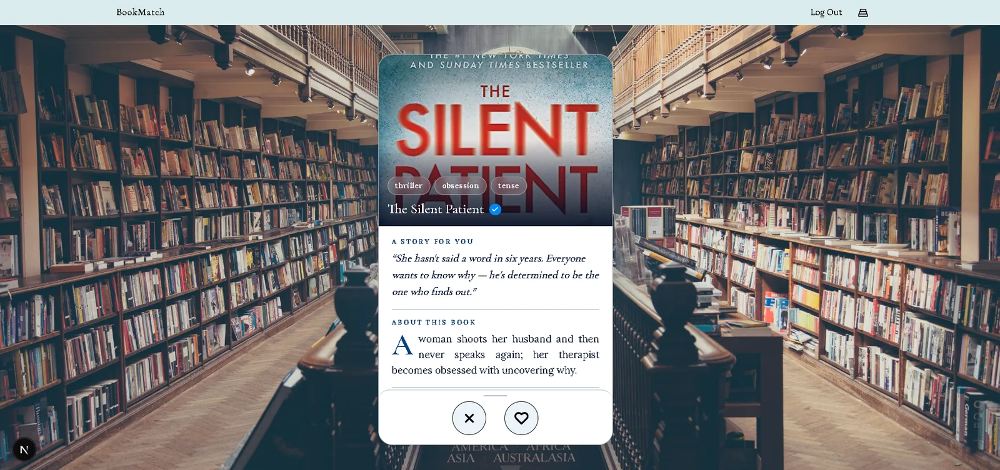
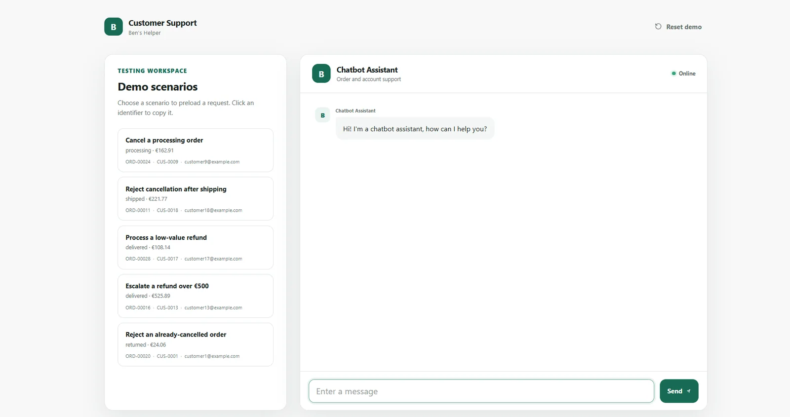

Chapter 1 of 5
2023
The first courses
Computer Science coursework at the Open University of Israel, from 2023 to 2024.
This is where I confirmed that this was the field I wanted, and the next step was a full degree.
/full stack developer
I'm studying Computer Science at the University of Porto and looking for a junior full stack role. I build web apps end to end — Next.js on the front, FastAPI and PostgreSQL behind it — and some of them use LLMs through the OpenAI API.

Computer Science coursework at the Open University of Israel, from 2023 to 2024.
This is where I confirmed that this was the field I wanted, and the next step was a full degree.
Started a BSc in Computer Science at the University of Porto (FCUP).
Coursework in databases, data structures, algorithms and computer networks — the foundation under everything I build now.
Face recognition in PyTorch based on the ArcFace paper, car detection with YOLO, and tumor classification on brain MRI scans.
In January 2026 I completed the Deep Learning Specialization from DeepLearning.AI.
Web apps with a Next.js frontend, a FastAPI backend and a PostgreSQL database, deployed on Render or Cloudflare.
A few use the OpenAI API — to extract data from invoices, or to answer questions from a store's policy documents. The ML background helps me judge where a model fits and where it doesn't.
I graduate in September 2027. Until then, I'm looking for a junior full stack role.
I'm based in Porto and available immediately.
An honest ranking, not a wall of logos. Point at one to see which projects it shipped in.
Each featured project has a live demo and its code open on GitHub.

A book discovery platform that learns each reader's taste from swipes and refines recommendations in real time.

An invoice-processing platform that extracts structured data from uploaded PDFs and validates it automatically. Uncertain results go to a human review workflow.

An AI support assistant for a fictional online store: it tracks orders, handles cancellations and returns, answers policy questions from the store's documentation and escalates complex cases to a person.
The model decides which tool to call, but refund limits are checked in Python. No prompt can talk its way past them.
When an extraction isn't confident, it goes to a review screen with an audit trail instead of straight into the records.
In LedgerDrop
The assistant only answers from the passages it retrieved, and every citation shows the text it came from.
Migrations, backups and CI where they matter — and a live demo anyone can open.
In BookMatch
I'm based in Porto and available immediately.